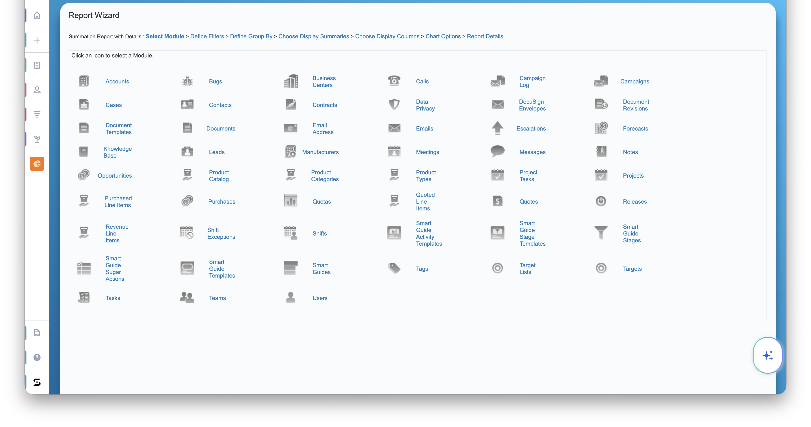
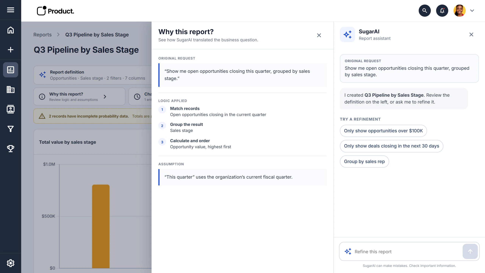
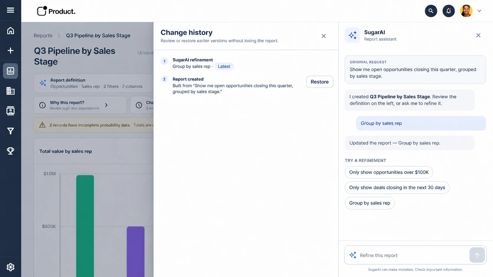
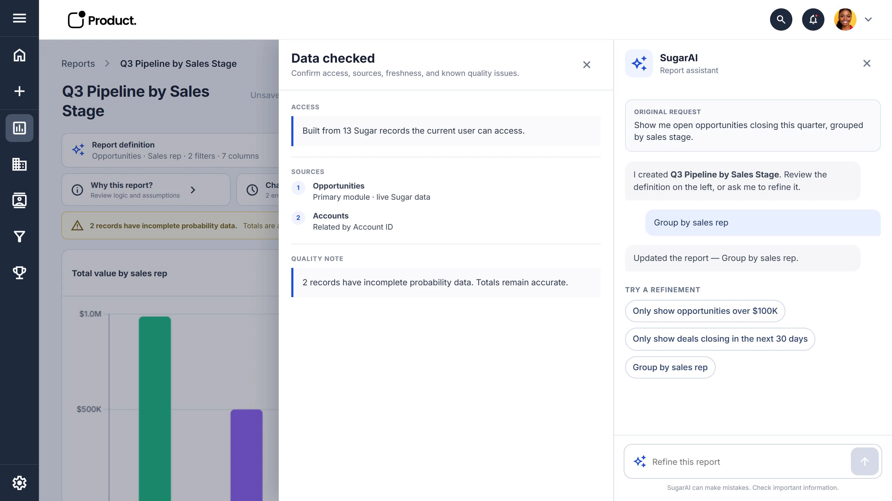

Sales Representative
What do I need to work on today?
- My pipelineWhich opportunities need my attention?
- Closing and stalled dealsWhat is urgent, valuable, or no longer moving?
- Recent activityWhere do I need to follow up next?
SugarAI · Enterprise reporting
Three sales reps did the same report task in both tools. Average time to a correct, complete answer fell from 15–18 minutes in the existing wizard to 1 minute and 20 seconds in the new builder.
The problem
A sales leader might ask, “Which opportunities close this quarter, and how do they break down by sales stage?” Before the wizard showed any data, it asked for a module, filters, calculations, columns, and chart settings.
Without a preview, users had to remember earlier choices and hope the final report answered their question. Many reports ended up incomplete or abandoned because, after finishing the wizard, reps couldn’t get the data to come out the way they wanted.
The root cause was a mismatch in mental models. The wizard asked reps to think in the CRM’s structure. Reps think in business questions.
Previous workflow

Research
I met with sales reps and leaders to understand what they repeatedly needed reports to answer. Reps focused on today’s priorities; leaders looked for team health, forecast risk, and pipeline patterns.
Sales Representative
Sales Leader
Design challenge
This was one of SugarAI’s first AI features. Sales reps aren’t technical report builders, and many already used ChatGPT and similar tools. Plain language let them start from the question they already had.
But a chart can look convincing even when it includes the wrong records. I wanted reps to see how SugarAI interpreted their question and correct its filters or grouping before building the report.
Design decisions
Skipping review would remove the only point where a rep can check what’s about to be built. Incorrect filters can still produce a convincing answer, and one wrong report can break trust in the feature.
Experienced report builders still need precise control.
A short request can substantially change the answer.
Before and after
The rep’s first decision shifted from choosing a database module to describing the answer they needed.
Start with the CRM’s structure and work through seven separate decisions.
Start with the business question and confirm the structure before building.
The solution
Flow 1
A rep can type a question or choose a suggested prompt. SugarAI checks for an existing report first.
If none fits, the rep reviews the proposed setup, corrects it, and builds the report. They can switch between the table and charts without changing the definition.
Help getting started
Four prompts reflect questions from research, including pipeline by sales stage and win rate by rep.
The examples show how to specify a subject, time period, or grouping. Reps can also write their own question.

Check what already exists
SugarAI first searches existing reports and surfaces likely matches. Users can open one or start a new report anyway, avoiding duplicates without blocking creation.

Review before building
One screen brings together the data source, report type, grouping, metric, filters, and columns. Users can correct the setup before generation.

While SugarAI builds
A short sequence names the work underway: reading the request, checking records, grouping the result, and preparing the chart and table.

After the report is built
The Report definition drawer keeps the setup available after the result appears, so users can inspect or refine it without starting over.

Flow 2
Changing a filter used to mean leaving the report. I kept the results in view so reps could ask a follow-up and preview edits before applying them. They could undo the last change or restore an earlier version.
Why should I trust this?
Before acting on a forecast, a sales leader needs to know which records it includes and whether the data is complete.
I put the applied logic, change history, and data checks in drawers so leaders can inspect an answer alongside the chart.



Results
All three completed the build and refinement tasks.
In moderated calls, each rep completed the task in the existing wizard, then repeated the same task in the new builder. I timed both from the start of a report to a complete answer. The wizard had been in the product for more than 10 years, while the new builder was new to every rep, so familiarity favored the old tool. The new builder did have one advantage: reps already knew the task on their second run.
Each generated report pulled the right data from the system, so speed didn’t come at the cost of accuracy.
I kept both editing options available on the report.
The rep wanted to restore an earlier result but couldn’t find the control.
Retrospective
Reps trusted the result because they could see and correct SugarAI’s interpretation before anything was built. Two of the three chose direct edits over chat, which confirmed keeping both paths.
Recovery was the gap. One rep couldn’t find version history, so my next test would put a Restore action beside the edited result and check whether reps recover without prompting.
Three reps make these results directional. Before launch, I’d test with a larger group and track how often reps correct the review card, the clearest signal of whether SugarAI reads questions correctly.